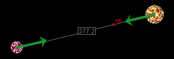
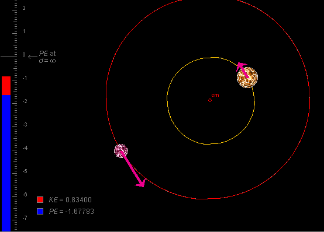

Instructions
This page is designed to get you started using the applet. The applet should be open. The step-by-step instructions on this page are to be done in the applet. You may need to toggle back and forth between instructions and applet if your screen space is limited.
Make sure you know Eqs.(1) and (2) from Assumptions on the menu above when working through the first two sections.
 Positions and Gravitational Forces
Positions and Gravitational Forces
 Positions and Potential
Energy
Positions and Potential
Energy
Exercise 1. RESET the applet.
Display the force vectors by selecting the Vectors button
 and
checking "Gravitational Forces" in the vector panel that
opens up.
and
checking "Gravitational Forces" in the vector panel that
opens up.
Drag the stars into a configuration similar to that shown in Figure 1 below.

Figure 1
Drag the ruler so that one end coincides with the center of one star. Then drag the ruler's other end so that it coincides with the center of the other star. Adjust the positions of the stars so that the ruler measures about 277, as in Figure 1.
Exercise 2. Observe the gravitational forces (green arrows) that the stars exert on each other. The forces are oppositely directed and have equal magnitude. Measure the common magnitude F (length of the arrows representing the forces) by means of the ruler. For the configuration in Figure 1, F is close to 60.
Move the stars apart until their distance is twice that it was before, to approximately 574. Based on Eq.(1) from Assumptions, what do you expect the magnitude of the forces to be now? Measure the magnitude with the ruler and check your prediction. (It should be around 15. Because of the imprecision in lining up the ruler's endpoints exactly, there may be some error in the value you measure.)

Exercise 1. RESET the applet. Use the ruler to set the center-to-center distance between the stars to 250, or as close to this value as possible.
Record the value of the binary-star system's potential energy PE displayed in the bottom left corner of the applet window. It should be close to -1.68. You can obtain the PE value also, but not to the same accuracy, from reading the position of the top of the blue potential energy column on the energy scale.
Change the position of the two stars so that their distance increases. The potential energy should increase also. (The top of the blue potential energy column should rise and the PE value should become less negative.)
Exercise 2. Move the stars apart until their distance is twice that it was before, approximately 500. Based on Eq.(2) from Assumptions, what do you expect the magnitude of the potential energy to be now? Measure the magnitude with the ruler, and check your prediction. It should be around -0.84. Because of the imprecision in lining up the ruler's endpoints exactly, there may be some error in the value you measure.
Exercise 3. RESET the applet. Drag the energy scale downward until the zero point of the scale is at the top of the blue potential energy column. The PE value displayed will be close to 0. Move the two stars apart until their center-to-center distance is 500 or very close to this value. What value do you expect the potential energy to have now? It should be close to +0.84. Why?
Exercise 1. RESET the applet. Display the velocity vectors of the two stars, but no other vectors. (In the applet's default state, all three kinds of vectors are displayed.) Select the Vectors button, and uncheck "Momenta" and "Gravitational Forces" in the vector panel that pops up. Close the vector panel by deselecting the Vectors button, pressing it a second time.
Observe that the velocities of the two stars are opposite, but not of equal magnitude. See Figure 2 below. Drag the tip of one of the velocity vectors. The other one will adjust automatically so that the velocities are always opposite and so that their magnitudes have a constant ratio.

Figure 2
Exercise 2. Measure the magnitude of the larger velocity vector with the ruler, and record the value of the system's kinetic energy KE displayed in the bottom left corner. Double the magnitude of the velocity vector by dragging the arrow. The kinetic energy is proportional to the square of the speed. What new KE value do you predict? The value should quadruple. Check if it does.
Exercise 3. For most initial velocities, the orbits of the two stars are elliptical. The orbits are circular if one sets the initial velocity vectors so that they are perpendicular to the line joining the stars and so that the kinetic energy is equal to half of the absolute value of the potential energy,
KE = 0.5 |PE| .
This equation assumes that PE = 0 when d = , as in the applet's default state.
Adjust the initial velocities so that these conditions are
met. Then PLAY the motion. You should obtain circular orbits
as in Figure 2 above. Display the orbits by selecting the
Trace button  .
.
Exercise 1. RESET the applet. Display the stars' momentum vectors, but not the velocity and force vectors.
Observe that the momenta are equal in magnitude and opposite in direction. Under this condition, the center of mass of the system is at rest during the motion. PLAY the motion and check if this is the case.
Exercise 2. REWIND  the applet. Display the stars' velocity vectors
in addition to their momentum vectors. The velocity and
momentum vectors are superimposed because they point in the
same direction.
the applet. Display the stars' velocity vectors
in addition to their momentum vectors. The velocity and
momentum vectors are superimposed because they point in the
same direction.
Change the momentum vectors by dragging the tip of one of the velocity vectors. (The tips of the momentum vectors cannot be dragged.) Observe that the momentum vectors are always equal in magnitude and opposite in direction. Thus, the total momentum of the system is always zero. The applet is designed this way, so that the center of mass is at rest during the motion for all available initial conditions.